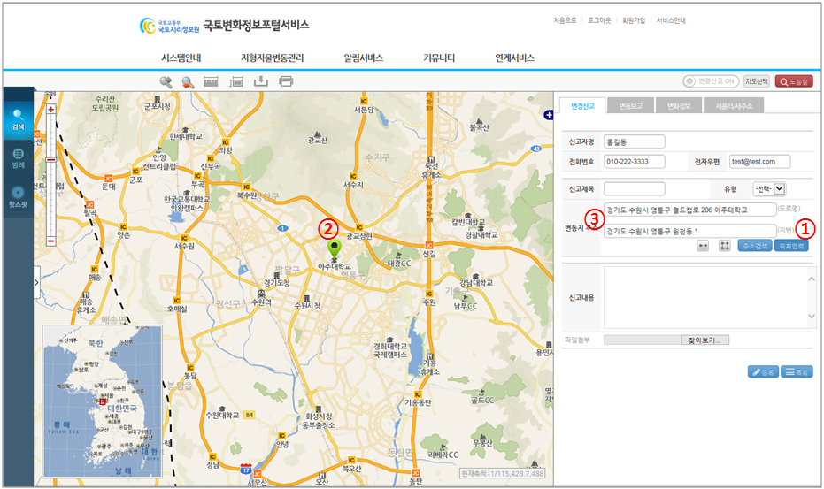

지형지물변동 > 지도변경신고 > 지도로찾기
| ① |
|
|||
| ② | 위치입력을 안내하는 메시지 확인버튼을 클릭하면 위치 등록창이 나타나서 위치 입력을 할 수 있다. | |||
| ③ | [확인] 버튼을 클릭하여 지도상의 변동정보신고 위치를 입력한다. | |||
| ④ |
|
|||
| 변동지점의 위치를 입력한다. 마우스 스크롤을 밀면 확대, 당기면 축소, 마우스를 지도상에 누른채로 이동시 위치패닝이 된다. 새로운 위치에 다시 입력하려면 새로운 위치에서 마우스 클릭하면 새로운 위치로 입력된다. |
||||
| ⑤ | [등록] 버튼을 클릭하여 ④의 입력한 심볼을 위치로 입력되며, 이전 창으로 돌아간다. | |||
| ⑥ | [취소] 버튼을 클릭하면 위치 입력이 취소되며, 이전창으로 돌아간다. |